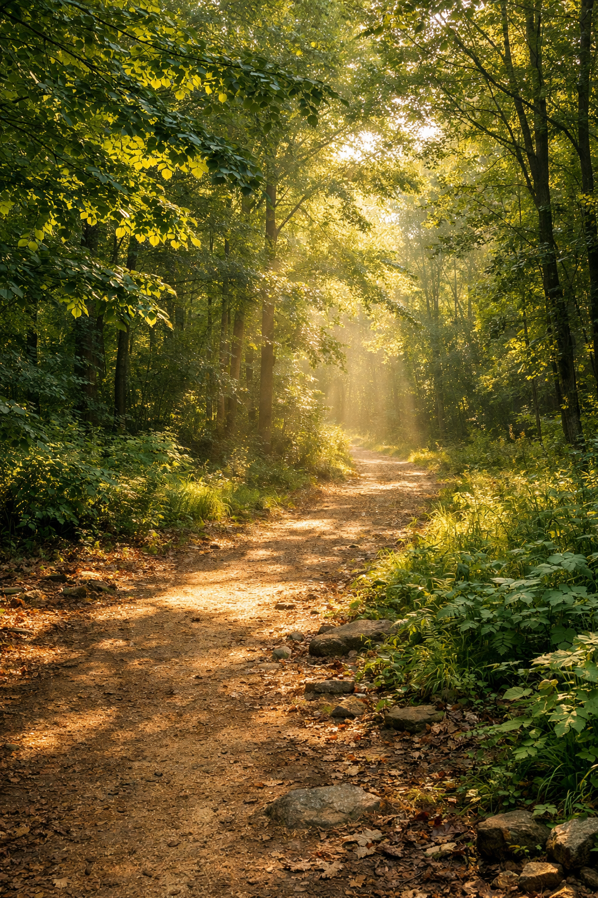

Natura Viva
Una experiencia inmersiva para conectar con la naturaleza, aprender sobre sostenibilidad y descubrir la vida que nos rodea.
“Natura Viva” es un campus dedicado a la convivencia con el medio natural. Los participantes aprenderán a observar, respetar y actuar por la biodiversidad a través de actividades prácticas y reflexivas.
El campus combina talleres, salidas y dinámicas para fomentar la conciencia ambiental y la conexión emocional con la naturaleza.

Caminatas guiadas y observación de flora y fauna para entender la interdependencia de los ecosistemas.
Actividades de convivencia con animales del refugio para comprender sus emociones y comportamientos.
Talleres de reciclaje, acciones ecológicas y proyectos colectivos para reducir la huella ambiental.
Si quieres formar parte de esta experiencia transformadora, inscríbete al campus y vive la naturaleza desde dentro. Cada paso es una oportunidad para aprender y cuidar el planeta.
“Cuando escuchamos la naturaleza, descubrimos que todo está vivo y conectado.”
NATURA VIVA